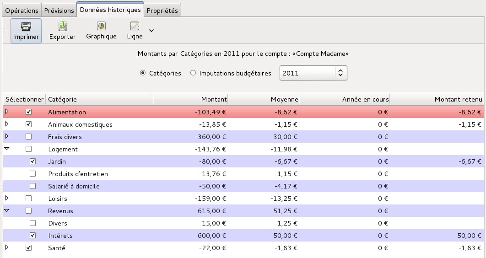
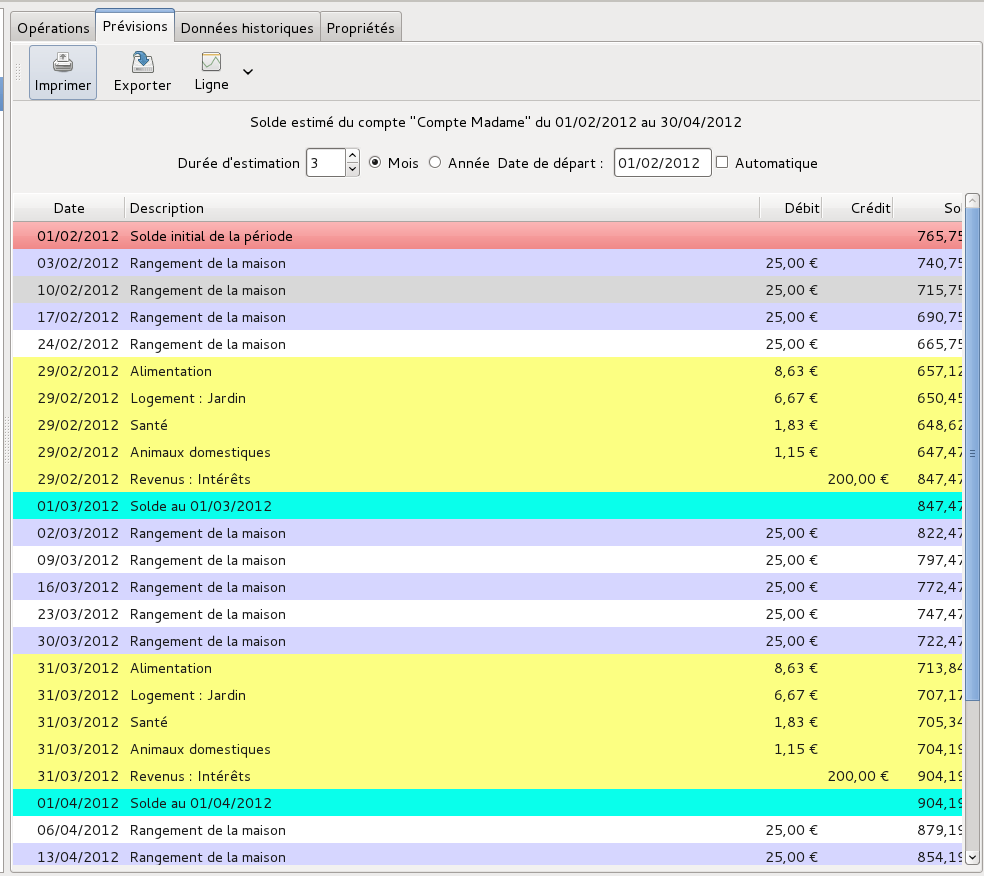
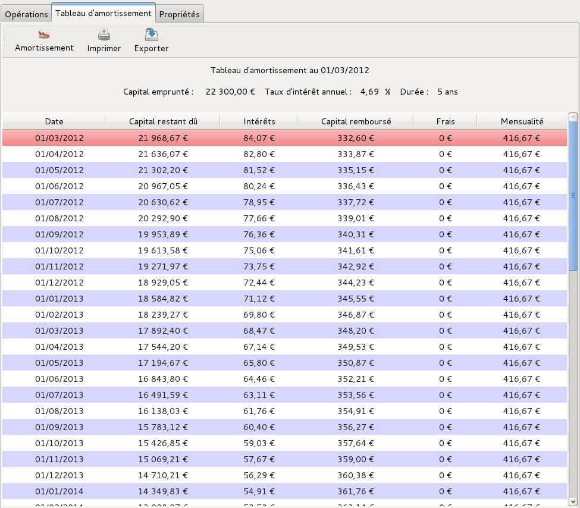
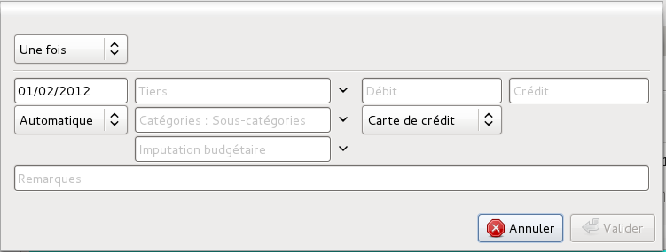

Un budget est un document récapitulatif des recettes et des dépenses prévisionnelles pour un agent économique (individu, ménage, entreprise, État, etc.) pour un exercice comptable à venir.
Grisbi vous permet de définir, pour chaque compte, un budget prévisionnel par exercice ou sur douze mois, basé sur les données historiques précédentes classées suivant leurs imputations budgétaires ou leurs imputations comptables (catégories et sous-catégories). Au moment de son établissement, un budget n’a de valeur que si les prévisions affichées sont conformes à la réalité qu’elles sont censées décrire : aucune dépense ne doit être «oubliée » ou minorée, aucun revenu ne doit être majoré…
Grisbi vous permet aussi de faire un suivi de vos emprunts à travers les comptes de passif, en créant des tableaux d’amortissement.
Pour avoir accès au budget prévisionnel ou au tableau d’amortissement pour un compte, sélectionnez ce compte dans le panneau de navigation ou avec la barre d’information (voir le chapitre 4, Accueil) : le panneau de navigation affiche le nom du compte sur fond bleu, et le pavé des détails affiche tous les onglets disponibles du compte.
Si le compte sélectionné n’a pas encore été configuré pour un budget prévisionnel ou un tableau d’amortissement, seuls les onglets Opérations et Propriétés sont affichés : dans ce cas, suivez la procédure Création d’un budget prévisionnel, pour un compte de banque ou de caisse (voir la section 17.4), ou bien Création d’un tableau d’amortissement, pour un compte de passif (voir la section 17.6).
Sinon, si le compte sélectionné a été auparavant configuré pour un budget prévisionnel ou un tableau d’amortissement, le pavé des détails affiche d’autres onglets, suivant le type du compte :
Note : pour les comptes de caisse, l’onglet Prévisions n’est affiché que si l’on a choisi d’afficher aussi leurs prévisions.
Note : il est vivement conseillé de consulter les sections suivantes décrivant ces différents onglets, avant de commencer l’établissement de budgets prévisionnels ou de tableaux d’amortissement.
L’onglet Données historiques contient l’ensemble des données qui vont servir de base à l’établissement de votre prévision. Ce sont toutes les opérations déjà enregistrées dans votre compte, relatives à une période de temps donnée, et groupées en catégories ou imputations budgétaires.
Pour afficher les détails des Données historiques, sélectionnez leur onglet. Il affiche trois éléments :

Figure 17.1: Onglet des données historiques
La barre d’outils présente les fonctions suivantes :
L’en-tête des données historiques s’affiche en haut du pavé des détails. Il affiche les paramètres nécessaires pour établir les prévisions, tels qu’ils auront été définis auparavant, en particulier dans le menu Édition - Préférences (voir la section 22.6.2, Données des comptes). Ces paramètres sont les suivants :
Note : le choix des exercices ne s’affiche que si au moins un exercice a été défini (voir la section 15.2, Mise en place des exercices).
Le tableau des données historiques s’affiche en bas du pavé des détails, sous l’en-tête des données historiques. Il affiche toutes les opérations déjà enregistrées dans le compte et appartenant à la période de référence, qui vont servir à établir la prévision.
Ce tableau affiche en haut la barre de libellés des colonnes. Vous pouvez élargir ou rétrécir une colonne en cliquant sur le séparateur entre deux colonnes et en le déplaçant. Vous pouvez déplacer le tableau vers le haut ou vers le bas avec la molette de la souris, ou bien avec la souris et l’ascenseur vertical.
Il affiche autant de lignes qu’il y a dans le compte de catégories et de sous-catégories, ou bien d’imputations budgétaires et de sous-imputations budgétaires. Ses champs d’affichage sont les suivants :
Note : ces triangles peuvent être remplacés, en fonction du thème de l’environnement de bureau ou du gestionnaire de fenêtres que vous utilisez, par d’autres caractères tels que +, -, >, <, etc.
Chaque (sous-) catégorie ou (sous-) imputation budgétaire est affichée sur une seule ligne. Pour une bonne lisibilité de l’affichage, Grisbi présente une alternance de couleurs de fond violet et blanc à chaque ligne.
Pour sélectionner une (sous-) catégorie ou une (sous-) imputation budgétaire, vous avez deux moyens :
La ligne apparaît alors sur fond rouge.
Un menu contextuel est disponible par un clic-droit sur une ligne, et propose les actions suivantes :
Note : si vous sélectionnez ce choix pour une ligne non mensuelle, son montant sera reporté chaque mois dans les prévisions, qui seront donc faussées.
Pour afficher les graphiques sur les données historiques d’un compte, vous disposez de trois outils dans la barre d’outils :
Pour afficher les graphiques en secteurs, cliquez sur l’outil Graphique dans la barre d’outils. Une fenêtre affiche, sous la forme de deux graphiques en secteurs, pour les revenus et les dépenses, l’ensemble des montants sélectionnés dans le tableau des données historiques, par catégories ou imputations budgétaires selon le cas, et sur la période de référence : soit un exercice, soit 12 mois glissants.
Note : le choix des exercices ne s’affiche que si au moins un exercice a été défini (voir la section 15.2, Mise en place des exercices).
Le placement du pointeur de souris au-dessus d’un secteur affiche dans une info-bulle son nom, son montant et son pourcentage par rapport au total du secteur, et un clic-droit dessus affiche un autre graphique en secteur relatif à ses sous-catégories ou sous-imputations budgétaires, s’il y a lieu.
Ces graphiques fournissent une représentation visuelle des rapports entre les différents postes de dépenses ou de revenus passés, et permettent d’affiner votre sélection de données, par exemple en ne sélectionnant que les plus importantes.
L’outil Ligne ou Colonne sert de choix par défaut, et la liste déroulante à sa droite permet de changer ce choix par défaut, donc de remplacer l’outil Ligne par l’outil Colonne et inversement.
Ces deux graphiques fournissent une représentation visuelle de l’évolution passée du montant Année en cours d’une ligne du tableau des données historiques, et permettent d’en anticiper les conséquences par des mesures appropriées.
pour afficher ce graphique, sélectionnez une des lignes de (sous-) catégorie ou de (sous-) imputation budgétaire dans le tableau des données historiques, puis cliquez dans la barre d’outils sur l’outil Ligne ou sur le libellé Ligne de la liste déroulante ; une fenêtre affiche, dans son onglet Graphique, le nom et le montant pour l’Année en cours de la ligne sélectionnée, et sa courbe d’évolution sur la période de référence. Vous pouvez afficher des lignes de niveau en cliquant sur le bouton Montrer la grille, et les enlever par le bouton Cacher la grille.
Vous pouvez définir, dans l’onglet Options, la présentation du graphique pour l’axe horizontal (graduation principale, position, ligne supplémentaire, orientation) et pour l’axe vertical (grille principale et secondaire).
pour afficher ce graphique, sélectionnez une des lignes de (sous-) catégorie ou de (sous-) imputation budgétaire dans le tableau des données historiques, puis cliquez dans la barre d’outils sur l’outil Colonne ou sur le libellé Colonne de la liste déroulante ; une fenêtre affiche, dans son onglet Graphique, le nom et le montant pour l’Année en cours de la ligne sélectionnée, et son évolution sur la période de référence, sous la forme de barres verticales. Vous pouvez afficher des lignes de niveau en cliquant sur le bouton Montrer la grille, et les enlever par le bouton Cacher la grille.
Vous pouvez définir, dans l’onglet Options, la présentation du graphique pour l’axe horizontal (graduation principale, position, ligne supplémentaire, orientation) et pour l’axe vertical (grille principale et secondaire), ainsi que pour les barres (espacement et superposition de la grille).
L’onglet Prévisions contient l’ensemble des résultats calculés à partir des choix de configuration et du tableau des données historiques.
Pour afficher les détails des Prévisions, sélectionnez son onglet. Il affiche trois éléments :

Figure 17.2: Onglet des prévisions
La barre d’outils présente les fonctions suivantes :
L’en-tête des prévisions s’affiche en haut du pavé des détails, sous la barre d’outils. Il affiche les paramètres tels qu’ils ont été définis auparavant, en particulier dans le menu Édition - Préférences (voir la section 22.6.2, Données des comptes). Ces paramètres sont les suivants :
Le tableau des prévisions s’affiche en bas du pavé des détails, sous l’en-tête des prévisions. Il affiche les opérations que Grisbi est capable de déduire à partir des données historiques de la période de référence. Il peut se composer de quatre types de ligne d’opération :
Ce tableau affiche en haut la barre de libellés des colonnes. Vous pouvez élargir ou rétrécir une colonne en cliquant sur le séparateur entre deux colonnes et en le déplaçant. Vous pouvez déplacer le tableau vers le haut ou vers le bas avec la molette de la souris, ou bien avec la souris et l’ascenseur vertical.
Il affiche autant de lignes qu’il y a d’opérations budgétées pour la période définie. Ses champs d’affichage sont les suivants :
Note : la description Par défaut est le contenu du premier de ces champs pour chaque opération, s’il existe et dans cet ordre : Remarques, Tiers, Catégories et Imputations budgétaires.
Les opérations sont affichées dans l’ordre chronologique et mois après mois, comme suit :
Pour sélectionner une opération, vous avez deux moyens :
La ligne apparaît alors sur fond rouge.
Un menu contextuel est disponible par un clic-droit sur une ligne, et propose les actions suivantes, selon le contexte :
Un double-clic sur une ligne d’opération du tableau ferme l’onglet Prévisions, ouvre l’onglet Opérations, sélectionne l’opération concernée et l’affiche dans le formulaire de saisie. De cette façon, cette opération peut être affichée et modifiée facilement.
Pour afficher les graphiques sur les prévisions d’un compte, vous disposez de deux outils dans la barre d’outils :
Ces graphiques fournissent une représentation visuelle de l’évolution future du solde du compte, et permettent d’en anticiper les conséquences par des mesures appropriées.
Pour afficher ce graphique, cliquez dans la barre d’outils sur l’outil Ligne ou sur le libellé Ligne de la liste déroulante ; une fenêtre affiche dans son onglet Graphique la courbe d’évolution de la prévision du Solde du compte, en fonction de la date sur la Durée d’estimation. Vous pouvez afficher des lignes de niveau en cliquant sur le bouton Montrer la grille, et les enlever par le bouton Cacher la grille.
Vous pouvez définir, dans l’onglet Options, la présentation du graphique pour l’axe horizontal (graduation principale, position, ligne supplémentaire, orientation) et pour l’axe vertical (grille principale et secondaire).
Pour afficher ce graphique, cliquez dans la barre d’outils sur l’outil Colonne ou sur le libellé Colonne de la liste déroulante ; une fenêtre affiche dans son onglet Graphique l’évolution de la prévision du Solde du compte, sous forme de barres verticales, en fonction de la date sur la Durée d’estimation. Vous pouvez afficher les lignes de niveau en cliquant sur le bouton Montrer la grille, et les enlever par le bouton Cacher la grille.
Vous pouvez définir, dans l’onglet Options, la présentation du graphique pour l’axe horizontal (graduation principale, position, ligne supplémentaire, orientation) et pour l’axe vertical (grille principale et secondaire), ainsi que pour les barres (espacement et superposition de la grille).
Vous pouvez créer des tableaux d’amortissement afin de faire le suivi de vos emprunts. Les emprunts sont gérés dans Grisbi à l’intérieur de comptes de passif (voir la section 7.7.3, Type compte de passif), à raison d’un seul emprunt par compte de passif, qu’il faudra que vous ayez créé auparavant.
Pour afficher les détails du Tableau d’amortissement, sélectionnez son onglet. Il affiche trois éléments :

Figure 17.3: Tableau d’amortissement
La barre d’outils présente les fonctions suivantes :
Les données du crédit s’affichent en haut du pavé des détails, sous la barre d’outils. Elles affichent les paramètres tels qu’ils ont été définis auparavant, en particulier dans le menu Édition - Préférences (voir la section 22.6.2, Données des comptes). Ces paramètres sont les suivants :
Le tableau d’amortissement détaillé s’affiche en bas du pavé des détails, sous les données du crédit. Il affiche les caractéristiques détaillées de chaque échéance du crédit dont les paramètres sont affichés dans les données du crédit.
Il affiche en haut la barre de libellés des colonnes. Vous pouvez élargir ou rétrécir une colonne en cliquant sur le séparateur entre deux colonnes et en le déplaçant.
Le tableau d’amortissement affiche autant de lignes qu’il y a d’échéances dans le crédit. Ses champs d’affichage sont les suivants :
Vous pouvez déplacer la liste des échéances vers le haut ou vers le bas avec la molette de la souris, ou bien avec la souris et l’ascenseur vertical.
Chaque échéance est affichée sur une ligne. Pour une bonne lisibilité de l’affichage, Grisbi présente une alternance de couleurs de fond violet et blanc à chaque ligne.
Pour sélectionner une échéance, vous avez deux moyens :
La ligne apparaît alors sur fond rouge.
Un menu contextuel est disponible par un clic-droit sur une ligne, et propose les actions suivantes :
La création d’un budget prévisionnel pour un compte comprend quatre étapes :
Le principe est, après avoir réalisé toutes les configurations, de sélectionner une par une, dans le Tableau des données historiques, les lignes qui correspondent à des opérations qui vont normalement se reproduire dans le futur (par ex. Alimentation, Impôts, Assurances, Énergies, Salaire, etc.) ; ces choix se répercutent automatiquement dans le tableau des prévisions ; ensuite, dans l’onglet Prévisions, d’ajuster le résultat en ajoutant de nouvelles opérations ou en supprimant celles inutiles. On peut cependant modifier à tout moment les choix opérés dans ce Tableau des données historiques.
Les quatre étapes de création d’un budget prévisionnel sont décrites dans les sous-sections ci-dessous.
Les paramètres généraux pour l’ensemble de vos budgets se trouvent dans le menu Édition - Préférences (voir la section 22.6.1, Généralités). Définissez là ces paramètres, si cela n’a pas déjà été fait auparavant, puis revenez à la sous-section ci-dessous.
Vous pouvez valider le budget prévisionnel pour un compte et configurer tous les paramètres dans le menu Édition - Préférences (voir la section 22.6.2, Données des comptes).
Pour afficher les détails des Données historiques, sélectionnez leur onglet dans le compte concerné.
Dans l’En-tête des données historiques, modifiez, si nécessaire, la source des données pour le compte ainsi que la période de référence pour ces données.
Note : le choix des exercices ne s’affiche que si au moins un exercice a été défini (voir la section 15.2, Mise en place des exercices).
Dans le Tableau des données historiques, sélectionnez la première ligne : elle s’affiche sur fond rouge ; puis procédez comme suit :
Note : ces triangles peuvent être remplacés, en fonction du thème de l’environnement de bureau ou du gestionnaire de fenêtres que vous utilisez, par d’autres caractères tels que +, -, >, <, etc.
Note : vous pouvez aussi forcer directement un montant dans ce champ : saisissez-le et validez-le par la touche <Entrée>.
Exécutez cette procédure pour toutes les lignes suivantes de catégories (ou d’imputations budgétaires). Quand vous avez terminé toutes les lignes, vos données historiques sont supposées correctes et votre prévision sera calculée, au moins, par extrapolation de ces données.
Sélectionnez maintenant l’onglet Prévisions en cliquant dessus.
Pour afficher les détails des Prévisions, sélectionnez leur onglet dans le compte concerné.
Note : pour les comptes de caisse, l’onglet Prévisions n’est affiché que si l’on a choisi de valider l’affichage de leurs prévisions (voir la section 22.6.1, Généralités).
Dans l’En-tête des prévisions, modifiez, si nécessaire, la Durée d’estimation, la Date de départ et la case à cocher Automatique (info-bulle : «Cochez la case pour changer automatiquement de date de début»).
Note : la date de début de prévision devrait être postérieure à aujourd’hui ; si vous saisissez une date de début de prévision antérieure, les prévisions inclueront toutes les opérations déjà enregistrées entre cette date et aujourd’hui.
Que la date de début de prévision soit antérieure ou postérieure à aujourd’hui, si vous cochez la case Automatique, Grisbi mettra automatiquement, à chaque ouverture du fichier de comptes, le début de la période de prévisions au premier jour du mois en cours. Par exemple, si la date de départ est le 1er janvier 2013 et la durée d’estimation 3 mois, vos prévisions commenceront ce jour-là et se termineront le 31 mars 2013 ; le jour du 1er février, les prévisions vont alors automatiquement commencer le 1er février et se terminer le 30 avril. Par contre, si la case n’avait pas été cochée, les prévisions auraient toujours commencé le 1er janvier et se seraient toujours terminées le 31 mars.
Vous pouvez alors procéder au réglage fin de vos prévisions : dans le Tableau des prévisions, un clic-droit sur une ligne, déjà sélectionnée ou non, l’affiche sur fond rouge avec un menu contextuel où vous pouvez sélectionner les actions suivantes :
la ligne sélectionnée reste affichée, mais le solde n’en tient plus compte.
la ligne sélectionnée reste affichée, mais le solde en tient compte à nouveau.
le formulaire de saisie s’affiche. Saisissez-y les champs d’une nouvelle opération, récurrente ou non, puis validez : l’opération s’affiche sur fond vert. On peut insérer une pseudo-opération planifiée, mais aussi un pseudo-virement, en choisissant comme catégorie un virement vers un autre compte. La contre-opération de ce virement est automatiquement affichée dans l’onglet Prévisions (s’il existe) du compte concerné, avec un montant inversé.

Figure 17.4: Formulaire d’insertion d’une ligne
le formulaire de saisie s’affiche avec les paramètres de la ligne sélectionnée ; modifiez-y les champs de l’opération, puis validez : l’opération s’affiche sur fond vert. Certains champs peuvent ne pas être modifiables, donc si besoin est, il faut supprimer cette ligne et en insérer une nouvelle. Cette fonction ne peut apparaître que si vous aviez auparavant créé cette ligne par la fonction Insérer une ligne.
l’opération est supprimée, sans autre avertissement.
Note : il n’est pas possible de supprimer ici une ligne de prévision issue d’une opération planifiée ; cela doit être fait dans l’onglet Échéancier (voir la section 10.12, Suppression d’une opération planifiée).
toutes les lignes d’une opération récurrente sont supprimées. Cette fonction ne peut apparaître que si vous aviez auparavant créé cette ligne par la fonction Insérer une ligne.
Note : il n’est pas possible de supprimer ici toutes les lignes de prévision issues d’une opération planifiée ; cela doit être fait dans l’onglet Échéancier (voir la section 10.12, Suppression d’une opération planifiée).
cette fonction ouvre la fenêtre Configuration d’un compte à débit différé, qui sert à configurer les prévisions pour des cartes bancaires à débit différé ; cette configuration et l’utilisation de cette fonction sont décrites en détail dans la section 18.2, Carte bancaire à débit différé.
affiche la liste des opérations planifiées de l’onglet Échéancier, puis copie et affiche cette ligne d’opération dans la liste en mode édition (sur fond rouge), et affiche le formulaire de saisie ; complétez-le et saisissez les paramètres manquants, en particulier ceux de périodicité (voir la section 10.3, Formulaire de saisie des opérations planifiées). Cette fonction ne peut apparaître que si vous aviez auparavant créé cette ligne par la fonction Insérer une ligne.
recalcule le tableau de prévisions.
ouvre la fenêtre de sélection de l’imprimante et de ses options (voir la section 17.9, Impression d’un tableau de données historiques, de prévisions ou d’amortissement).
permet d’exporter le tableau de prévisions dans un fichier (voir la section 17.8, Export d’un tableau de données historiques, de prévisions ou d’amortissement).
Note : chaque action terminée sur une opération déclenche le recalcul du tableau.
Pour modifier un budget prévisionnel, reprenez les étapes décrites dans la section 17.4, Création d’un budget prévisionnel.
Pour créer un tableau d’amortissement dans un compte de passif, procédez comme suit :
Dans le compte de passif concerné, un nouvel onglet Tableau d’amortissement s’affiche entre les deux autres onglets Opérations et Propriétés, et le tableau d’amortissement est créé. Vous pouvez y afficher le tableau d’amortissement à partir de la date de début ou de la prochaine échéance par la fonction Depuis le début ou À aujourd’hui de la barre d’outils.
Pour supprimer un tableau de données historiques, de prévisions ou d’amortissement sur un compte, il faut enlever les onglets Données historiques et Prévisions, ou l’onglet Tableau d’amortissement ; procédez comme suit :
Dans le compte concerné, les onglets Données historiques et Prévisions, ou l’onglet Tableau d’amortissement, ne s’affichent plus.
Attention : cette suppression ne supprime pas tout de suite les onglets, et vous pouvez les retrouver en revalidant le module budgétaire. Par contre, il sont totalement supprimés si vous enregistrez le fichier de comptes, ou si vous quittez Grisbi en enregistrant avant de quitter.
Grisbi vous permet d’exporter ces tableaux, soit pour les enregistrer, soit pour les importer dans une autre application, par exemple un tableur pour y faire des calculs spécifiques.
Pour exporter un tableau de données historiques, de prévisions ou d’amortissement, procédez comme suit :
Attention : d’une manière générale, il est déconseillé d’avoir des accents ou des espaces dans les noms des répertoires et fichiers utilisés par Grisbi. Si c’est le cas, renommez-les maintenant. Par exemple, les espaces peuvent être remplacées par des tirets bas (_).
Pour imprimer un tableau de données historiques, de prévisions ou d’amortissement, procédez comme suit :
En fonction de votre gestionnaire d’impression, vous pourrez disposer de réglages divers tels que la taille et l’orientation de la feuille, la résolution, la police d’impression et sa taille, etc.
Note : un tableau de données historiques, de prévisions ou d’amortissement peut être très long ; affichez un aperçu avant impression pour vérifier ce que vous allez imprimer.